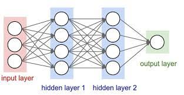

Contexte physique
Cette étude s’inscrit dans le travail de recherche mené dans le cadre de la thèse d’Arthur Hirsch intitulée ’Étude numérique et expérimentale d’un nouveau type d’accélérateur de pro- tons par voie laser’ sur la conception d’un accélérateur de protons basé sur le processus d’accélération d’ions TNSA, illustré sur la figure ci-dessous, adapté à diverses applications, comme le chauffage protonique isochore, la production de radioisotopes médi-caux, ou la radiographie protonique en contexte plasma-laser. Le principe consiste à tirer avec un laser au centre une feuille métallique de l’ordre du micromètre d’épaisseur. Sous l’effet du laser, la cible va se transformer en plasma et éjecter de chaque côté des électrons chauds. Ce processus crée un champ de séparation de charge en face arrière de la cible, ex- trayant un faisceau de protons, comme illustré sur la figure ci-dessous. Dans sa thèse Arthur Hirsch propose de canaliser le faisceau de protons en utilisant un champ électrique généré par un coil de l’autre côté de la feuille. La particularité de ce champ électrique est qu’il est induit par le courant de décharge de la cible, celle-ci s’étant chargée suite à l’éjection des électrons chauds. L’idée est donc de maximiser l’énergie du faisceau de protons en utilisant la plus grande partie possible de l’énergie fournie par la source laser. Notre ambition est d’explorer de nouvelles pistes en tirant parti des capacités génératives des réseaux de neurones en particulier les auto-encodeurs pour leur habilité à comprimer les données.
Pour plus de profondeur sur la méthode TNSA, veuillez consulter la référence : Markus ROTH et Marius SCHOLLMEIER. « Ion Acceleration—Target Normal Sheath Accelera- tion ». In : (jan. 2016). DOI : 10.5170/CERN-2016-001.231.
Objectifs
- Optimisation de la géométrie de coils pour l'expérience TNSA
- Création de réseaux de neurones artificiels pour relier la géométrie de coils aux champs électromagnétiques qu'ils engendrent
- Programmation d'auto-encodeurs pour approcher cette bijection à travers un espace latent de dimension inférieure → nécessité de le cartographier
- Maniement du code de calcul DOPPLIGHT.m qui calcule pour un coil de géométrie donnée, les champs E et B. Pour plus de détails sur son architecture, voir cette page.
- Nécessité d'une base de données sur laquelle entraîner le réseau → optimisation du temps de calcul du code DOPPLIGHT
Introduction : le Deep Learning
Le deep learning, une branche de l’intelligence artificielle, vise à résoudre des problèmes complexes à l’aide de réseaux de neurones artificiels. Depuis l’invention du perceptron, le premier neurone artificiel conçu par Frank Rosenblatt en 1957, diverses architectures ont vu le jour, telles que les MLP, RNN, LSTM, Transformers, GNN, etc. Dans notre étude, nous examinerons spécifiquement les ré- seaux de neurones denses (DNN), les réseaux de neurones convolutifs (CNN) et les auto-encodeurs, une architecture qui a émergé dans les années 1990. Initialement présentés comme une alternative non-linéaire à l’Analyse par Composante Principale (ACP) en raison de leur capacité à encoder des données volumineuses dans un espace vectoriel réduit, leur champ d’application s’est depuis considérablement élargi, englobant aussi bien le débruitage que la génération de données. Ces réseaux sont basé sur les notions suivantes:
L'apprentissage supervisé : C'est un type d'apprentissage automatique, la machine apprend à créer des modèles les plus précis possibles, les données à la différence du cas précédent sont labellisées, ce type d'apprentissage peut avoir plusieurs utilisations comme la régression ou le traitement d'image.
La fonction de coût : Dite en anglais la "Loss function", c'est une fonction mathématique qui permet de mesurer l'efficacité du modèle et de réduire la marge d'erreurs entre la prédiction et le résultats réels en comparant deux fonctions loss : la training loss, issue des données d'entraînement et la test loss issue des données tests.
La figure ci-dessous résume ce principe :

Différentes architectures de RNA
Architecture des Réseaux Neuronaux Denses (DNN) : Les Réseaux Neuronaux Denses, souvent appelés réseaux entièrement connectés, constituent un paradigme fondamental en apprentissage profond. Dans un DNN, chaque neurone dans une couche donnée est connecté à chaque neurone de la couche suivante, créant ainsi une matrice dense de connexions. Cette interconnexion permet aux DNN de capturer des relations complexes au sein des données, les rendant polyvalents pour modéliser des motifs et des représentations complexes.
Les DNN se composent généralement de plusieurs couches, y compris des couches d'entrée, cachées et de sortie. Les neurones des couches cachées utilisent des fonctions d'activation pour introduire des non-linéarités, permettant au réseau d'apprendre et de représenter des caractéristiques complexes dans les données. L'architecture d'un DNN est caractérisée par un grand nombre de paramètres, nécessitant des techniques d'optimisation sophistiquées pendant le processus d'entraînement.
Fonction de Coût dans les DNN : L'évaluation des performances des DNN repose sur l'efficacité de la fonction de coût, souvent désignée sous le nom de "Loss function". Cette construction mathématique mesure la disparité entre les prédictions du modèle et les résultats réels. Pendant l'entraînement, l'algorithme de rétropropagation ajuste les paramètres du réseau pour minimiser cette perte, facilitant la convergence du modèle. Le choix d'une fonction de coût appropriée est crucial, en fonction de la nature de la tâche, qu'il s'agisse de classification, de régression ou d'un autre objectif spécifique.
Les réseaux neuronaux convolutionnels (CNN) : Ces réseaux sont spécifiquement conçus pour traiter des données structurées en grille, telles que des images. La couche de convolution est la caractéristique distinctive des CNN, permettant d'extraire des motifs locaux dans les données. Les CNN sont particulièrement performants dans les tâches de vision par ordinateur, telles que la classification d'images. La fonction de coût, ou "Loss function", demeure essentielle dans l'évaluation de la performance du réseau, en comparant les prédictions avec les véritables labels, contribuant ainsi à l'apprentissage et à l'amélioration du modèle au fil du temps.
Une représentation visuelle de la structure d'un CNN est présentée ci-dessous :

Un auto-encodeur est un type particulier de réseau de neurones artificiel qui se caractérise par le fait d'être symétrique. Il est utilisé particulièrement dans l'apprentissage non supervisé. Ce dernier est composé de deux architectures qui sont l'encoder et le decoder, relié par l'espace latent qui est une représentation intermédiaire et compressée des données.
La fonction coût permet donc de valider la qualité de notre auto-encodeur, en comparant les données de sortie de notre encoder avec la donnée récupérée à la sortie du decoder afin Approcher une bijection (hypoth ́etique) entre l’espace des données et un espace de dimension réduit..
L'espace latent dans le contexte des autoencodeurs représente une représentation condensée et abstraite des caractéristiques les plus saillantes des données d'entrée. À travers le processus d'encodage, les autoencodeurs compressent l'information dans cet espace latent, le rendant fondamental pour la représentation efficace des données. La dimension de l'espace latent influence directement la capacité du modèle à encapsuler la variabilité complexe des données, avec des dimensions plus élevées permettant une représentation plus détaillée mais nécessitant une régularisation adéquate pour éviter une surapprentissage.
L'optimisation de l'espace latent est une tâche délicate, impliquant souvent des techniques avancées telles que la régularisation L1 ou L2, la contrainte de sparsité, ou même des mécanismes d'échantillonnage stochastique (VAE). Une représentation bien optimisée de l'espace latent facilite la génération de nouvelles données, l'interpolation entre les points, et offre des insights significatifs sur la structure sous-jacente des données. L'exploration de cet espace latent constitue ainsi un aspect clé de l'utilisation avancée des autoencodeurs, ouvrant des opportunités pour la découverte de motifs latents complexes et la génération de données synthétiques pertinentes.
L'auto-encodeur est un outil puissant pour la réduction de dimension, puisqu'il peut être utilisé dans les données non linéaires et complexes. Ses champs d'applications sont vastes, incluant le débruitage d'image, la détection de défauts, et bien d'autres.